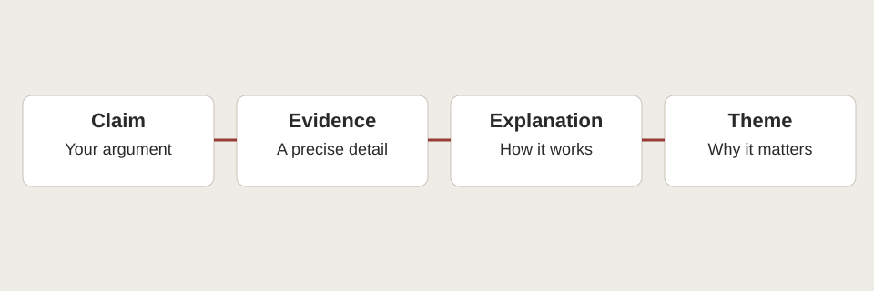

Claim
- Words from the original teaching model
- Careful language is both a resource for self-understanding and a sign of social influence.
- What the move does
- States an arguable tension.
A HUSKYDADDY NOVEL STUDY
Learn the moves of analysis through completed examples, explanations, and revision.
KEY IDEA
Analysis explains a relationship.
Move from a precise detail to a claim about how or why it matters.

Evidence note: Novel events below are paraphrased. Chapter numbers locate the relevant events; use page numbers from your own edition in formal MLA writing. Interpretations are arguments to test, not verified statements of authorial intention.
A summary selects what happens and preserves the order needed to understand an event. An analytical paragraph selects evidence to support a claim about meaning. It may include a small amount of summary, but it must explain a relationship the reader could reasonably question. Compare the following original paragraphs about Chapter 1. Both use paraphrase, and neither supplies a fabricated page number.
As December approaches, Jonas tries to decide how to describe his feelings. He first thinks of fear, then recalls an aircraft incident that truly frightened him. The community followed instructions to go indoors while waiting for an explanation. Later, his family shares feelings at the evening meal. After listening to the others, Jonas explains his uncertainty about the Ceremony of Twelve. His parents reassure him and offer a further conversation. The chapter introduces his family and several community practices through his concern about the approaching change.
Lowry’s opening presents careful language as both a resource for self-understanding and a sign of social influence. Jonas revises his first description of his feelings by comparing the coming ceremony with an aircraft incident he remembers as genuine fear (Ch. 1). The comparison shows active reflection rather than mindless repetition: he wants the word to fit his experience. However, limited narration also places a communal standard of precision inside his private thinking. The reader sees him evaluate himself before an adult needs to correct him. This combination makes the opening more complex than a simple picture of external control. Language helps Jonas recognize distinctions while shaping the categories through which he makes them. The scene therefore begins a question about whether approved expression expands a person’s understanding or sets its boundaries, without resolving that question before his experience develops.
The summary organizes events and supplies context. The analysis makes a debatable claim, selects the self-correction as evidence, names limited narration, and explains why access to thought matters. Its final distinction connects the method with a larger concern about language.
None of these moves requires pretending to know Lowry’s private intention. The paragraph argues what the text does for a reader.
A useful test is to ask what the explanation adds after the evidence. If it merely repeats the event in different words, it is still functioning as summary. If it traces a cause, contrast, pattern, or limitation that supports the claim, it is doing analytical work.
Choose one moment available at your reading stage. Write three accurate summary sentences. Then make a claim about a literary choice and explain how that same event supports it. Compare the purposes of your two versions before revising.
First, choose a question narrow enough to answer in one paragraph: how does Jonas’s self-correction reveal social influence? Second, form a claim that answers it while allowing a complication: careful language helps reflection but also brings a public standard into private thought. Third, select the smallest accurate event that can test the claim. Do not retell the whole chapter.
Fourth, identify how the event is presented: the narration follows the correction inside Jonas’s thoughts. Fifth, explain the effect and connect it to the argument: self-monitoring makes authority less visibly external. Sixth, qualify the result: this does not prove the correction is entirely harmful. The order claim → evidence → explanation → connection is a useful scaffold, not a rule that every paragraph must have exactly four sentences.
Use the Chapter 1 analytical paragraph above as the complete model. The parts below explain what each move accomplishes, rather than asking you to supply missing analysis.
Read across to compare; use stacked rows for a closer view.
| Move | Words from the original teaching model | What the move does |
|---|---|---|
| Claim | Careful language is both a resource for self-understanding and a sign of social influence. | States an arguable tension. |
| Evidence | Jonas revises his description by comparing the ceremony with the aircraft incident. | Identifies the specific paraphrased action. |
| Explanation | Limited narration places the communal standard inside private thinking. | Connects the presentation to a meaningful effect. |
| Connection / qualification | Language helps distinguish experience while shaping its categories. | Returns to the argument without declaring total oppression. |
Full-novel analysis is hidden. Choose “Full novel” above when you are ready. Chapter-by-chapter notes remain available in the reading guide.
Read across to compare; use stacked rows for a closer view.
| Weak claim | Stronger claim | Reason for improvement |
|---|---|---|
| The community is bad. | The assignment system recognizes ability while limiting who can decide a child’s future. | Names a specific practice and a tension that can be tested in Chs. 2, 7–8. |
| Jonas is different. | Jonas’s new perception makes alternatives imaginable while making shared understanding harder. | Explains consequences rather than attaching a trait; test in Chs. 12–13. |
| The Giver is wise. | The Giver’s decision to help people face returned memories makes wisdom a responsibility to others. | Locates wisdom in a choice and its purpose; test in Ch. 20. |
Full-novel warning: The second and third claims refer to later chapters. They are revealed only below in Full novel mode in the student version.
Use exact wording when a particular expression, sound, or comparison deserves analysis. The publisher’s accessible Chapter 1 excerpt begins with the verified phrase “It was almost December”. A sentence can integrate that phrase: By opening with “It was almost December” Lowry places Jonas near an expected transition.
For formal submission, use the page in your own edition and place the sentence’s final punctuation after the citation. A quotation without analysis does not demonstrate an argument simply because it comes from the book.
Introduce context briefly, quote only what you need, and explain a specific choice afterward. Preserve the original wording and meaning; mark changes and omissions according to MLA guidance instead of silently rewriting the passage. Avoid dropped quotations that appear as separate evidence with no grammatical connection to your sentence. This course uses short evidence; consult the linked official guidance before using longer extracts.
A paraphrase represents a source accurately using your own sentence structure and wording. To practise, close the source after reading the passage, state its relevant event from understanding, then reopen it to check accuracy. This is different from replacing one noun and keeping the original sentence pattern. Paraphrase still requires attribution in formal work because the event or idea is not your invention.
For example, an original event paraphrase is: Jonas compares his present uncertainty with a remembered incident that made him genuinely afraid. An added interpretation is: the comparison shows him using experience to test a label. Keep the two functions distinguishable. When using a study guide’s interpretation rather than an event from the novel, cite the guide too; do not present its argument as if you independently found it in the book.
For a specific passage in a paginated edition, an MLA parenthetical citation normally gives the author and page, or just the page if the author is already named in your prose. Paraphrases need locations as well as quotations when you refer to a particular part of a source. Chapter references on this site help students find events; they are not a universal substitute for page numbers in a paginated novel.
The examples below are citation patterns, not completed citations and not new quotations from Lowry. Square-bracketed page instructions must be replaced from your edition. Never submit the brackets as invented evidence.
If your edition is unpaginated, consult the MLA guidance for its format and your teacher’s directions. Do not invent pages or treat changing device-location numbers as stable print pages.
Read across to compare; use stacked rows for a closer view.
| Use | Pattern to complete from your edition |
|---|---|
| Paraphrase, author in parentheses | Jonas revises his description after comparing two experiences (Lowry [actual page]). |
| Paraphrase, author named in prose | Lowry places Jonas’s self-correction inside his thoughts ([actual page]). |
| Verified short phrase, author in prose | Lowry begins with “It was almost December” ([actual page]). |
Only the third pattern contains a verified quotation. The first two are original paraphrases. The bracketed page instructions are edition-dependent, not pretend page numbers. In a final paper, remove the brackets and supply only the actual number.
Lowry, Lois. The Giver. [Edition statement if applicable], [Publisher], [Year of this edition].
Use the title and copyright pages. Omit an edition element if none applies. Do not insert the original publication year automatically when citing a later edition. For an electronic edition, include the applicable format or container information according to MLA guidance. Alphabetize a full Works Cited list and format entries with hanging indents.
A useful revision changes what a paragraph explains, not just how many literary terms it contains. Begin by locating its claim and testing whether the evidence supports it. Then identify the sentence that explains a method or relationship. If every sentence repeats that a character is different or the community is bad, the paragraph needs a more precise line of thought.
Use the flawed and improved versions below as a worked exercise. The improved paragraph stays within Chapter 1 knowledge, so it can be used before students finish the novel. Neither version is a quotation from a student.
They are original teaching examples. Before comparing them, underline the vague judgement, circle the unsupported generalization, and mark the explanation that merely repeats the claim.
Jonas is controlled and the community is bad. He thinks about a word, which shows control because he is controlled. Everyone is afraid all the time and nobody can think. This makes the reader interested. Lowry uses lots of techniques to show that control is bad. Jonas is very different from everyone and this proves he will always make the right choices.
Jonas’s self-correction in Chapter 1 suggests that the community’s language standards have become part of how he evaluates himself. He compares his uncertainty about the ceremony with the fear he felt during the aircraft incident, then seeks a more accurate label. This is not evidence that he cannot think; the comparison shows active reflection. Limited narration nevertheless lets readers see a social expectation operating before an adult corrects him. The scene therefore creates a tension between useful precision and learned self-monitoring. A careful interpretation can recognize that tension without claiming everyone is constantly afraid or predicting that Jonas will always judge correctly.
What changed: The revision removes unsupported claims about everyone and always. It replaces circular explanation with a precise account of limited narration. It acknowledges that self-correction can involve active thought, making the argument more accurate and nuanced.